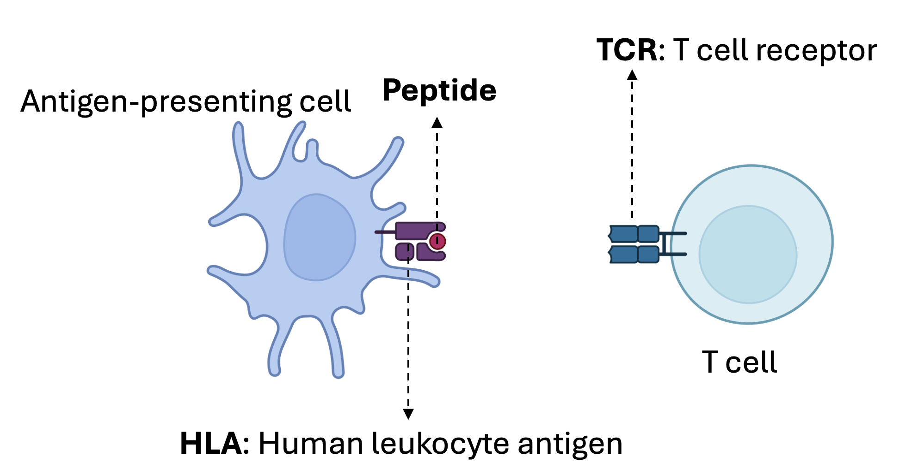

Predict TCR and peptide-HLA binding¶
T cell receptors (TCR), expressed on the surface of T cells, recognize and bind to immunogenic peptides or epitopes presented by human leukocyte antigen (HLA). This recognition process is fundamental to the adaptive immune system and serves as a critical mechanism for identifying and responding to pathogenic threats. A diverse array of TCRs ensures protection against a wide range of pathogens and malignant cells. Mechanisms exist to eliminate T cells that recognize self-antigens (central and peripheral tolerance), but self-tolerance can fail, leading to autoimmunity, especially when hidden self-antigens are exposed or when microbial antigens mimic self-antigens. Identifying the specific epitopes that trigger T cell activation in different disease contexts can provide crucial insights into disease pathogenesis and could enable the development of personalized therapies, such as tolerance-inducing vaccines or TCR-specific T cell depletion.
{kind=link}
There are 5 million unique TCRs per individual, and the TCR repertoire is highly diverse. The TCR repertoire is shaped by the individual’s genetics, environmental exposures, and immune history. This diversity allows the immune system to recognize a wide range of antigens, but it also makes it challenging to predict which TCRs will bind to specific peptides or HLA molecules.
Here we use public dataset from VDJdb to train a model to predict TCR-peptide-HLA binding. The dataset contains TCR sequences, peptide sequences, and HLA alleles associated with T cell responses. We will use this data to train a machine learning model that can predict whether a given TCR will bind to a specific peptide-HLA complex.
Load TCR and peptide-HLA binding data.¶
Load our training data (Download here)
TCRs with alpha and beta chain, V and J gene information
Peptide and HLA information
import pandas as pd
from themap import utils
from themap.model import THE, PEP_vae
import torch
import numpy as np
import warnings
warnings.filterwarnings("ignore")
seed = 0
np.random.seed(seed)
torch.manual_seed(seed)
torch.cuda.manual_seed(seed)
torch.cuda.manual_seed_all(seed)
torch.backends.cudnn.benchmark = False
torch.backends.cudnn.deterministic = True
device = torch.device("cuda:0" if torch.cuda.is_available() else "cpu")
df_train = pd.read_csv('VDJdb_train.csv')
Reconstruct full TCR sequences by CDR3 and VJ gene information¶
The TCR sequences in the dataset are often represented by their CDR3 regions, which are the most variable and antigen-specific parts of the TCR. To reconstruct the full TCR sequences, we need to combine the CDR3 regions with their corresponding V and J gene segments. This process involves using the V and J gene information to identify the appropriate gene segments and then concatenating them with the CDR3 regions to form the complete TCR sequences.
If you want to use your own TCR sequences, please make sure they are in the same format as the dataset. The TCR sequences should be in the form of CDR3 regions, and the V and J gene information should be provided separately. All V and J genes should be in the Allele column of the trajs_aa.tsv, trajs_aa.tsv, trbjs_aa.tsv, and trbjs_aa.tsv. in the ‘library/’ folder.
Or you can train the model using only CDR3 regions, but the performance may be lower.
df_train['alpha'] = utils.determine_tcr_seq_vj(df_train['alpha'].tolist(), df_train['V_alpha'].tolist(), df_train['J_alpha'].tolist(), chain='A')
df_train['beta'] = utils.determine_tcr_seq_vj(df_train['beta'].tolist(), df_train['V_beta'].tolist(), df_train['J_beta'].tolist(), chain='B')
df_train = df_train[['alpha', 'beta', 'V_alpha', 'J_alpha', 'V_beta', 'J_beta', 'HLA', 'Epitope']]
print(df_train.iloc[0])
alpha AQKITQTQPGMFVQEKEAVTLDCTYDTSDPSYGLFWYKQPSSGEMI...
beta DSGVTQTPKHLITATGQRVTLRCSPRSGDLSVYWYQQSLDQGLQFL...
V_alpha TRAV14/DV4*01
J_alpha TRAJ12*01
V_beta TRBV9*01
J_beta TRBJ1-2*01
HLA HLA-A*03
Epitope KLGGALQAK
Name: 0, dtype: object
Show TCR distribution for top 15 epitopes in the dataset. It is domianted by the ‘KLGGALQAK’ epitopes.
df_train['Epitope'].value_counts()[0:15].plot(kind='bar', figsize=(10, 5))
<Axes: xlabel='Epitope'>
Train and save the model¶
THEmodel = THE().to(device)
THEmodel.train_model(df_train, num_epochs=20, device=device)
torch.save(THEmodel.state_dict(), 'THE_model.pt')
████████╗██╗░░██╗███████╗███╗░░░███╗░█████╗░██████╗░
╚══██╔══╝██║░░██║██╔════╝████╗░████║██╔══██╗██╔══██╗
░░░██║░░░███████║█████╗░░██╔████╔██║███████║██████╔╝
░░░██║░░░██╔══██║██╔══╝░░██║╚██╔╝██║██╔══██║██╔═══╝░
░░░██║░░░██║░░██║███████╗██║░╚═╝░██║██║░░██║██║░░░░░
░░░╚═╝░░░╚═╝░░╚═╝╚══════╝╚═╝░░░░░╚═╝╚═╝░░╚═╝╚═╝░░░░░
INFO:themap.model:Training...
You are using the default legacy behaviour of the <class 'transformers.models.t5.tokenization_t5.T5Tokenizer'>. This is expected, and simply means that the `legacy` (previous) behavior will be used so nothing changes for you. If you want to use the new behaviour, set `legacy=False`. This should only be set if you understand what it means, and thoroughly read the reason why this was added as explained in https://github.com/huggingface/transformers/pull/24565
INFO:themap.model:Loading alpha_dict.pt
INFO:themap.model:No new CDR3alpha sequences found
INFO:themap.model:Loading beta_dict.pt
INFO:themap.model:No new CDR3beta sequences found
100%|██████████| 253/253 [01:07<00:00, 3.74it/s]
Epoch [1/20], Loss: 0.6152, ROC: 0.6933
100%|██████████| 252/252 [00:59<00:00, 4.26it/s]
Epoch [2/20], Loss: 0.5394, ROC: 0.7498
100%|██████████| 253/253 [01:18<00:00, 3.24it/s]
Epoch [3/20], Loss: 0.5514, ROC: 0.7743
100%|██████████| 253/253 [01:02<00:00, 4.04it/s]
Epoch [4/20], Loss: 0.5835, ROC: 0.7902
100%|██████████| 253/253 [01:04<00:00, 3.91it/s]
Epoch [5/20], Loss: 0.3517, ROC: 0.8045
100%|██████████| 252/252 [01:07<00:00, 3.72it/s]
Epoch [6/20], Loss: 0.4643, ROC: 0.8171
100%|██████████| 253/253 [00:54<00:00, 4.62it/s]
Epoch [7/20], Loss: 0.3954, ROC: 0.8281
100%|██████████| 252/252 [00:54<00:00, 4.61it/s]
Epoch [8/20], Loss: 0.5236, ROC: 0.8372
100%|██████████| 253/253 [00:55<00:00, 4.54it/s]
Epoch [9/20], Loss: 0.5375, ROC: 0.8472
100%|██████████| 253/253 [00:55<00:00, 4.58it/s]
Epoch [10/20], Loss: 0.4031, ROC: 0.8572
100%|██████████| 253/253 [00:53<00:00, 4.73it/s]
Epoch [11/20], Loss: 0.4266, ROC: 0.8634
100%|██████████| 253/253 [00:55<00:00, 4.54it/s]
Epoch [12/20], Loss: 0.2511, ROC: 0.8746
100%|██████████| 253/253 [01:00<00:00, 4.16it/s]
Epoch [13/20], Loss: 0.5195, ROC: 0.8829
100%|██████████| 252/252 [00:54<00:00, 4.64it/s]
Epoch [14/20], Loss: 0.4364, ROC: 0.8927
100%|██████████| 253/253 [00:55<00:00, 4.55it/s]
Epoch [15/20], Loss: 0.5727, ROC: 0.9016
100%|██████████| 252/252 [01:07<00:00, 3.72it/s]
Epoch [16/20], Loss: 0.3470, ROC: 0.9093
100%|██████████| 252/252 [01:11<00:00, 3.55it/s]
Epoch [17/20], Loss: 0.3069, ROC: 0.9173
100%|██████████| 253/253 [00:57<00:00, 4.43it/s]
Epoch [18/20], Loss: 0.4123, ROC: 0.9254
100%|██████████| 252/252 [00:54<00:00, 4.61it/s]
Epoch [19/20], Loss: 0.3053, ROC: 0.9314
100%|██████████| 252/252 [00:54<00:00, 4.65it/s]
Epoch [20/20], Loss: 0.2523, ROC: 0.9383
(optional) Load pretrained model¶
If you want to use a pretrained model, you can download it from here and load it using the following code:
THEmodel = THE().to(device)
THEmodel.load_state_dict(torch.load('THE_model.pt', map_location=device))
<All keys matched successfully>
Test the model¶
Load the test data (Download here)
df_test = pd.read_csv('VDJdb_test.csv')
df_test['alpha'] = utils.determine_tcr_seq_vj(df_test['alpha'].tolist(), df_test['V_alpha'].tolist(), df_test['J_alpha'].tolist(), chain='A')
df_test['beta'] = utils.determine_tcr_seq_vj(df_test['beta'].tolist(), df_test['V_beta'].tolist(), df_test['J_beta'].tolist(), chain='B')
result, cdr3a_attn, cdr3b_attn = THEmodel.test_model(df_test=df_test, device=device)
df_test['pred'] = result
You are using the default legacy behaviour of the <class 'transformers.models.t5.tokenization_t5.T5Tokenizer'>. This is expected, and simply means that the `legacy` (previous) behavior will be used so nothing changes for you. If you want to use the new behaviour, set `legacy=False`. This should only be set if you understand what it means, and thoroughly read the reason why this was added as explained in https://github.com/huggingface/transformers/pull/24565
INFO:themap.model:Loading alpha_dict.pt
INFO:themap.model:No new CDR3alpha sequences found
INFO:themap.model:Loading beta_dict.pt
INFO:themap.model:No new CDR3beta sequences found
INFO:themap.model:Predicting...
100%|██████████| 44/44 [00:13<00:00, 3.16it/s]
Plot AUC and PR curves for the model.
import matplotlib.pyplot as plt
from sklearn.metrics import (
roc_curve,
precision_recall_curve,
roc_auc_score,
average_precision_score
)
def plot_roc_prc_curve(y_true, y_scores, title_prefix=''):
"""
Plot aesthetically improved ROC and Precision-Recall curves with AUC scores.
Args:
y_true (array-like): Ground truth binary labels (0 or 1).
y_scores (array-like): Predicted scores (e.g., probabilities).
title_prefix (str): Optional prefix for plot titles.
"""
# Use a clean style
plt.style.use('seaborn-v0_8-muted')
# Compute metrics
fpr, tpr, _ = roc_curve(y_true, y_scores)
roc_auc = roc_auc_score(y_true, y_scores)
precision, recall, _ = precision_recall_curve(y_true, y_scores)
prc_auc = average_precision_score(y_true, y_scores)
# Print AUC values
print(f'{title_prefix}ROC-AUC: {roc_auc:.4f}')
print(f'{title_prefix}PRC-AUC: {prc_auc:.4f}')
# Set up plot
fig, axes = plt.subplots(1, 2, figsize=(12, 5))
# ROC Curve
axes[0].plot(fpr, tpr, color='#E24A33', lw=2.5, label=f'AUC = {roc_auc:.4f}')
axes[0].plot([0, 1], [0, 1], linestyle='--', color='gray', lw=1)
axes[0].set_xlim([-0.01, 1.01])
axes[0].set_ylim([-0.01, 1.01])
axes[0].set_xlabel('False Positive Rate', fontsize=12)
axes[0].set_ylabel('True Positive Rate', fontsize=12)
axes[0].set_title(f'{title_prefix}ROC Curve', fontsize=14, fontweight='bold')
axes[0].legend(loc='lower right', fontsize=10)
axes[0].grid(alpha=0.3)
# PRC Curve
axes[1].plot(recall, precision, color='#348ABD', lw=2.5, label=f'AUC = {prc_auc:.4f}')
axes[1].set_xlim([-0.01, 1.01])
axes[1].set_ylim([-0.01, 1.01])
axes[1].set_xlabel('Recall', fontsize=12)
axes[1].set_ylabel('Precision', fontsize=12)
axes[1].set_title(f'{title_prefix}Precision-Recall Curve', fontsize=14, fontweight='bold')
axes[1].legend(loc='lower left', fontsize=10)
axes[1].grid(alpha=0.3)
plt.tight_layout()
plt.show()
# Plot ROC and Precision-Recall curves
plot_roc_prc_curve(df_test['label'], df_test['pred'], title_prefix='THE: ')
THE: ROC-AUC: 0.8565
THE: PRC-AUC: 0.4687
Mean predictive score of ture postive and false postive pairs for each peptide¶
def compute_score_stats(df_list, top_epitopes):
tp_all, fp_all = [], []
for df in df_list:
tp, fp = [], []
for pep in top_epitopes:
preds = df[df['Epitope'] == pep]
tp.append(np.mean(preds[preds['label'] == 1]['pred']))
fp.append(np.mean(preds[preds['label'] == 0]['pred']))
tp_all.append(tp)
fp_all.append(fp)
tp_arr = np.array(tp_all)
fp_arr = np.array(fp_all)
return (
np.nanmean(tp_arr, axis=0), np.nanstd(tp_arr, axis=0),
np.nanmean(fp_arr, axis=0), np.nanstd(fp_arr, axis=0)
)
def plot_score_bars(top_epitopes, tp_mean, tp_std, fp_mean, fp_std):
x = np.arange(len(top_epitopes))
width = 0.35
fig, ax = plt.subplots(figsize=(12, 4))
ax.bar(x - width/2, tp_mean, width, yerr=tp_std, label='Positive', color='indianred', capsize=5, edgecolor='black')
ax.bar(x + width/2, fp_mean, width, yerr=fp_std, label='Negative', color='skyblue', capsize=5, edgecolor='black')
ax.set_ylabel('Predictive Scores')
ax.set_title('Mean predictive scores of positive and negative pairs per peptide')
ax.set_xticks(x)
ax.set_xticklabels(top_epitopes, rotation='vertical')
ax.legend(frameon=False)
ax.spines['top'].set_visible(False)
ax.spines['right'].set_visible(False)
fig.tight_layout()
def plot_peptide_counts(df_train, top_epitopes):
counts = [df_train[df_train['Epitope'] == pep].shape[0] for pep in top_epitopes]
x = np.arange(len(top_epitopes))
fig, ax = plt.subplots(figsize=(12, 4))
ax.bar(x, counts, width=0.5, color='#1f77b4', edgecolor='black')
ax.set_ylabel('Number of positive pairs')
ax.set_title('Training sample count per peptide')
ax.set_xticks(x)
ax.set_xticklabels(top_epitopes, rotation='vertical')
ax.spines['top'].set_visible(False)
ax.spines['right'].set_visible(False)
fig.tight_layout()
# Prepare data
top_epitopes = df_test['Epitope'].value_counts().head(15).index.tolist()
# Simulate multiple folds
df_test_list = [df_test.copy() for _ in range(1, 10)] # assume 9 test folds
# Compute mean and std of predictive scores
tp_mean, tp_std, fp_mean, fp_std = compute_score_stats(df_test_list, top_epitopes)
# Plot predictive scores
plot_score_bars(top_epitopes, tp_mean, tp_std, fp_mean, fp_std)
# Plot training sample counts
plot_peptide_counts(df_train, top_epitopes)
plt.show()
Plot the precision for each peptide across different thresholds¶
This evaluates whether the model’s high-confidence predictions are indeed true positives.
# if precision is -1, it means there is no positive prediction
import seaborn as sns
from sklearn.metrics import confusion_matrix
thresholds = [0.1,0.2,0.3,0.4,0.5,0.6,0.7,0.8,0.9,0.95]
precision_all = []
for pep in top_epitopes:
precision_list = []
for threshold in thresholds:
df_baselines = df_test[df_test['Epitope'] == pep]
cm = confusion_matrix(df_baselines['label'].values, df_baselines['pred'].values > threshold)
TP = cm[1, 1]
FP = cm[0, 1]
precision = TP / (TP + FP) if (TP + FP) > 0 else 0
precision_list.append(precision)
precision_all.append(precision_list)
# Create a DataFrame
df = pd.DataFrame(precision_all, columns=thresholds, index=top_epitopes)
# Create the heatmap
# if precision is 0, delete the value
df = df.replace(0, np.nan)
plt.figure(figsize=(10, 5))
sns.heatmap(df, cmap='YlGnBu', annot=True, fmt=".2f", linewidths=0.5)
plt.xlabel('Threshold')
plt.title('Precision scores for common peptides under different thresholds', fontsize=15)
plt.show()